이 단원을 배우면 우주 탐사의 의의와 인류에게 미치는 영향을 설명할 수 있다.
망원경이 빛을 모으는 원리를 직접 조작해 보고, 인공위성과 탐사선의 역사를 정리한 뒤, 로켓을 조종해 인공위성을 궤도에 올려 보자. 마지막으로 AI 조사 도우미와 함께 우주 탐사가 우리 삶에 미친 영향을 조사해 발표 자료를 만들어 보자.
인류는 끊임없이 우주를 탐사하고 있다. 우주를 탐사하는 까닭은 무엇인지 이야기해 보자.
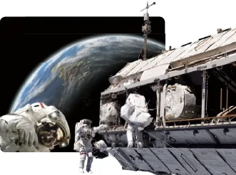
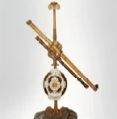
오랫동안 별과 우주는 인간이 맨눈으로만 볼 수 있는 대상이었다. 그런데 1609년에 갈릴레이가 최초로 망원경을 이용하여 천체를 관측한 이후 망원경의 성능이 점점 좋아지면서 인간의 눈으로 볼 수 없는 희미하고 작은 천체들도 볼 수 있게 되었다.
오늘날에는 가시광선뿐만 아니라 적외선, 전파를 이용하는 망원경이 개발되었으며, 지구 대기권 밖으로 우주 망원경을 쏘아 올려 관측 대상의 영역을 넓혔다.
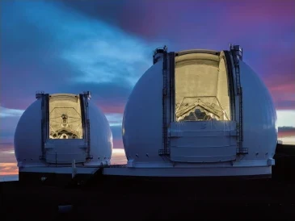
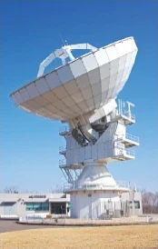
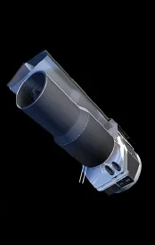
그림 망원경을 이용한 우주 탐사
아래 네 가지 망원경을 골라 직접 조작해 보자. 선은 빛(또는 전파)이 지나가는 길이다.
과학이 발달하면서 인류는 로켓을 이용하여 인공위성, 우주 탐사선 등을 우주로 내보내 우주에 관한 여러 가지 정보를 얻고 있다.
인공위성은 천체 주위를 돌도록 만든 인공의 장치로, 1957년에 최초의 인공위성인 스푸트니크 1호가 우주로 발사되었다. 허블 우주 망원경, 스피처 우주 망원경도 인공위성의 한 종류이다. 우주 탐사선은 지구 이외의 다른 천체를 탐사하기 위해 쏘아 올린 물체로, 탐사하고자 하는 천체의 궤도를 돌거나 천체에 착륙하여 탐사한다.
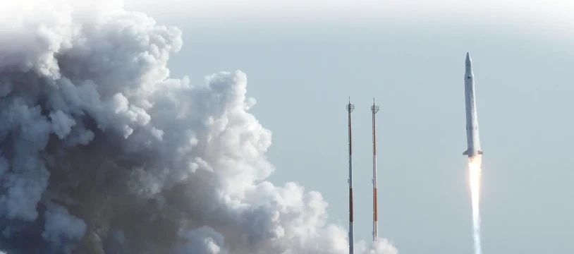
우리나라는 2009년에 인공위성을 발사할 수 있는 우주 센터(전남 고흥군 나로 우주 센터)를 완공하여 본격적인 우주 시대를 준비하게 되었다. 2013년에는 나로 우주 센터에서 나로호 로켓을 발사하여 나로과학위성을 궤도에 올렸다.
이후 우리 기술로 만든 누리호가 2022년 발사에 성공하였고, 같은 해 우리나라 최초의 달 탐사선 다누리가 달 궤도에 도착하여 달을 관측하고 있다.
한국항공우주연구원 누리집에서는 인공위성 등의 우주 발사체와 우주 탐사에 관한 다양한 학습 자료를 제공하고 있다.
나로 우주 센터에서 2단 로켓을 발사해 인공위성을 지구 궤도에 올려 보자. 로켓은 처음에 똑바로 위로 올라가다가 점점 옆으로 누워 수평 방향으로 빨라져야 한다. 오른쪽 위 작은 지도의 초록 궤도가 지구에 닿지 않고 한 바퀴 이어지면(근지점 고도 150 km 이상) 성공!
키보드: ← → 기울기, ↑ ↓ 추진력, Space 단 분리
태양계의 다른 행성과 달에는 무엇이 있을까? 우주에서 생명체는 지구에만 존재할까? 이러한 호기심을 해결하기 위해 인류는 우주 탐사를 위한 연구를 계속하고 있다. 이 과정에서 천문학, 물리학, 공학 등의 학문이 발전하였고, 인공위성이나 우주 탐사선, 로켓 등을 제작하기 위한 다양한 기술이 융합하며 발달하였다. 또한, 인공위성 개발자, 위성 관제 센터 연구원 등 우주 과학과 관련된 여러 전문 분야가 생겨나기도 하였다.
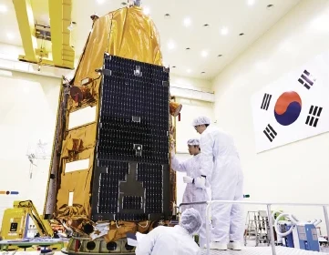
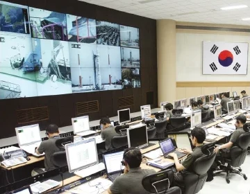
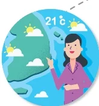
일기 예보를 하고, 태풍의 경로를 예측하여 피해를 줄일 수 있다.
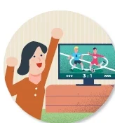
지구 반대편에서 열리는 스포츠 경기를 실시간으로 볼 수 있다.
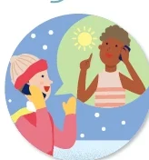
다른 나라에 있는 친구와 쉽게 전화 통화를 할 수 있다.
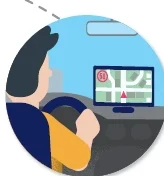
자신이 있는 위치를 파악하고 모르는 길을 찾을 수 있다. (방송 통신 위성과 함께)
목표 우주 탐사의 의의와 인류에게 미치는 영향을 조사하여 발표할 수 있다.
예) 우주를 더 잘 이해할 수 있다.
예) 화재경보기: 우주선에서 발생할 수 있는 화재를 예방하기 위해 개발되었다.
미지의 세계에 대한 인류의 호기심으로 시작된 우주 탐사를 통해 우리는 태양계와 우주의 정보를 얻고, 우리가 살고 있는 지구를 더 깊게 이해할 수 있게 되었다. 또한, 우주 탐사 과정에서 얻은 첨단 기술은 우리 삶의 질을 높여 주고 있다.
| 스스로 평가하기 | 예 | 아니요 |
|---|---|---|
| 21세기에 이루어진 우주 탐사의 성과를 몇 가지 이야기할 수 있다. | ||
| 토의할 때 상대방의 의견을 귀 기울여 들었다. | ||
| 우주 탐사의 의의와 인류에게 미치는 영향을 설명할 수 있다. |